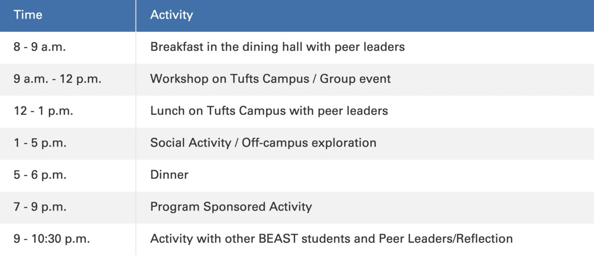

Building Engagement and Access for Students at Tufts (BEAST)
Purpose
BEAST is a free 4-day Pre-Orientation program focusing on the unique social and cultural experiences specific to students who may be the 1st in their families to attend college and seeking guidance on financial and academic resources. We want to empower students who are first-generation college students, low-income, undocumented, or otherwise seek such a program.
Benefits:
- Peer leaders who will help mentor, guide, and connect incoming students to resources, opportunities, and communities
- A community of individuals who come from similar backgrounds
- Academic, profesional, and perosnal support from staff members
Schedule
*Activities may include exploring Boston and various modes of transport, a financial workshop, and a personalized in-depth discussion as a first generation low income (FGLI) student at Tufts
See a typical day of BEAST below

Summer 2021 Peer Leaders

Ayah Basmeh
Ayah Basmeh is from Worcester, Massachusetts and is studying biomedical engineering. She's a Middle Eastern Arab, with half her blood belonging to Iraq and the other half to Syria. She's deeply passionate about music, playing both clarinet and bass guitar, but she likes to experiment with any instrument she can find. Ayah is also very fond of the outdoors and likes to immerse herself in the elements, whether it be skiing, kayaking, or even rock climbing

Guadalupe Romero-Celaya
Guadalupe (she/her) is a rising Junior at Tufts from Chelsea, MA, majoring in Child Study and Human Development. Lupe has been part of BEAST for two summers: once as a first-year/BEASTie, later as a Peer Leader, and this summer she is super excited to help coordinate the pre-o! This year, she will also be the President of United for Immigrant Justice. In her free time, she enjoys watching movies, playing video games (especially the Last of Us or Cold War) and engaging in some arts and crafts with her little sister, Ashley